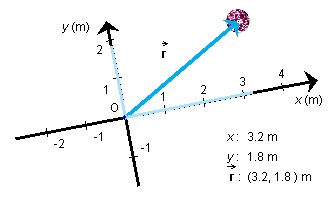

.
.
The diagram below illustrates all basic aspects related to position and the position vector.

In the diagram we have an extended object, a ball. What would one mean by the position of the ball?
To define a single position as the position of the ball, one idealizes the ball to a mass point and takes the position of this mass point to be that of the ball. One can take the mass point to be located anywhere in the ball, e.g., at the ball's center as in the diagram.
The position of the ball can be characterized by a displacement
vector from a fixed point O to the ball. This vector is called the
ball's position vector. It is denoted .
Suppose a pair of x and y axes are drawn with point O as their origin. The x and y coordinates of the ball's position relative to these axes are also the x and y components of the ball's position vector. This can be expressed symbolically, using parentheses to indicate the components, as
= (x, y) .
For an example illustrating this notation see the diagram above. The components x and y of the position vector are indicated graphically by pale blue lines.
The ball's position vector depends on where point O, the reference point, is chosen.